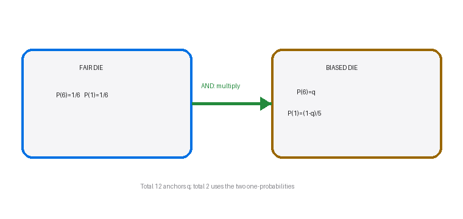

I have two six-sided dice, each with faces numbered from 1 to 6. One of the dice is fair, but the other is not; it will land on numbers 1 to 5 with equal probability, but lands on 6 with a different probability.
When I roll the dice the probability that I get a total of 12 is $\frac{1}{18}$.
What is the probability that I get a total of 2 when I roll the dice?
A $\frac{1}{72}$ B $\frac{1}{45}$ C $\frac{1}{36}$ D $\frac{1}{18}$ E $\frac{1}{9}$
Not completed in the lesson — official-reference reconstruction below.
[1 mark · multiple choice]
Strategy. Model the biased die with one unknown attached to the exceptional face: let $q=P(6_{\rm biased})$. Use the total-12 information first, because 12 has exactly one ordered outcome, six on each die. Only after that anchor is found should the remaining mass be shared equally over faces 1 to 5.
Why this method applies. The dice are rolled independently. The event ‘total 12’ is therefore the intersection of ‘fair die shows 6’ and ‘biased die shows 6’. An intersection of independent events uses multiplication, whereas addition would answer an OR question. The unique-outcome structure makes the given probability a direct equation for $q$.
Formula or definition first. For independent events, $P(A\cap B)=P(A)P(B)$. Probability mass on one die satisfies $P(1)+\cdots+P(6)=1$. Thus $P(12)=\frac16q=\frac1{18}$, and each of faces 1 to 5 has probability $(1-q)/5$ once $q$ is known.
Full intermediate derivation. Solve the anchor equation without skipping the multiplication: $\frac16q=\frac1{18}$, so $q=6\cdot\frac1{18}=\frac13$. The other five faces carry total mass $1-\frac13=\frac23$. Equality among faces 1 to 5 gives $P(1_{\rm biased})=\frac{(2/3)}5=\frac2{15}$. The fair die remains uniform, so $P(1_{\rm fair})=\frac16$.
Difficult transition. A useful but different parameterisation calls each common probability $p$, producing $5p+q=1$. Both parameterisations are valid only if the letter keeps one meaning. The transition from the given total 12 to the target total 2 changes which face is required; it does not change independence or justify adding probabilities.

Check back / sense check. The recovered value $q=1/3$ reproduces the given: $(1/6)(1/3)=1/18$. The five equal remaining probabilities sum to $5(2/15)=2/3$, and $2/3+1/3=1$. These checks verify both independence and normalisation before the target is evaluated.
Strategy. Translate the target ‘total 2’ into its unique elementary outcome: both dice must show 1. Bring forward the two one-probabilities from the established model, multiply them, simplify exactly, and only then match the result to the printed options.
Why this method applies. There is no second combination such as 0+2 because standard dice have faces 1 to 6. Consequently the event is exactly one joint outcome, $(1_{\rm fair},1_{\rm biased})$. Independence still applies, so the probability is the product of the marginal probabilities found in the first step.
Formula or definition first. Use $P(X=1,Y=1)=P(X=1)P(Y=1)$ for independent dice. Here $P(1_{\rm fair})=\frac16$ and $P(1_{\rm biased})=\frac2{15}$, so the exact target is $\frac16\times\frac2{15}$.
Full intermediate derivation. Multiply numerators and denominators: $\frac16\times\frac2{15}=\frac2{90}$. Divide numerator and denominator by 2 to obtain $\frac1{45}$. Therefore the official-reference completion is $\boxed{\frac1{45}}$, which is option B. The arithmetic is intentionally shown before option matching so the option list cannot drive a guess.
Difficult transition. The difficult conceptual transition is keeping the given and target events separate. Total 12 established the bias through two sixes; total 2 asks for two ones. Reusing $q=1/3$ directly as the biased one-probability would ignore the equal redistribution of the remaining $2/3$ over five faces.
Check back / sense check. A joint event must be no more likely than either event alone. Indeed $1/45<2/15<1/6$, so the magnitude is sensible. Also option B agrees with the official answer key and with a full sample-space calculation weighted by the biased die.